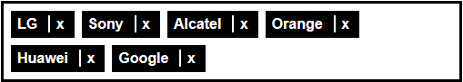

Creating accessible “tags” 1/2
Preamble
In this example we will create accessible “tags” — you know, these buttons we use to categorize content or add a list of recipients, etc.
Final design
Here is an example of the expected design:
HTML structure
As tags do not wander on their own, we will create an HTML list. Thus a user browsing with a screen reader will directly hear the number of tags on display. “List of X elements…”.
<ul>
<li>Alcatel</li>
<li>Doro</li>
<li>Apple</li>
<li>LG</li>
<li>Sony</li>
</ul>
Example 1

Removing a tag
One must be able to remove a tag. We will add a “Remove” button on each element in our list. For users who cannot see the screen and browse with a screen reader, a plain “Remove” button is not sufficient. We will add the tag name in the button’s label to disambiguate, i.e. “Remove Sony from the list”.
The use of a real button makes this functionality accessible to the screen reader, but also to people who cannot use a mouse and rely on a keyboard to move the focus (with the tab key). A button can indeed be focused naturally.
<ul>
<li>Alcatel<button>Remove Alcatel from the list</button></li>
<li>Doro<button>Remove Doro from the list</button></li>
<li>Apple<button>Remove Apple from the list</button></li>
<li>LG<button>Remove LG from the list</button></li>
<li>Sony<button>Remove Sony from the list</button></li>
</ul>
Example 2

And voilà! Simple and accessible tags. OK, it’s not very beautiful so far.
Let’s decorate
Now that our tags are accessible, we can decorate them. The ideal solution would be to make them look like the first illustration at the beginning of this article. We have several solutions.
For example, we can start by replacing the button’s text by an “X” or a cross-shaped icon.
<ul>
<li>Alcatel<button>X</button></li>
</ul>
Example 3
But wait, we’ve just lost screen reader users. The buttons are now vocalized as “X”. We can fix this for example with the aria-label attribute.
<ul>
<li>Alcatel<button aria-label="Remove Alcatel from the list">X</button></li>
</ul>
We’ll add some CSS to hide the button background and borders.
button {
background-color: transparent;
border: none;
color: #fff;
font-weight: bold;
}
Example 4

Optimisation
It works but it’s not perfect. You have to aim precisely to remove a tag, because the cross-shaped button is not that big. It’s not very nice to use and may really be a problem for people with a trembling hand or who have difficulties using a mouse.
Since we know that removing is the only possible action, we could extend the clickable zone to the whole tag. Hence, even if you slightly miss the target, the remove action will be taken into account.
<ul>
<li><button aria-label="Remove Alcatel from the list">Alcatel</button></li>
</ul>
We add the cross via CSS:
li button:after {
content: "x";
margin: .25rem .25rem .25rem .75rem;
padding-left: .4rem;
border-left: .15rem solid #fff;
}
Example 5

It’s better. Visually, we can see two things in each tag, the label and a remove button. Yet with a screen reader we only hear for the moment “Remove XXX from the list.” To correct this, we add a span containing the tag’s label. To prevent it from being displayed on screen (this would double the information), we add to it an accessible hiding class (sr-only). The text will only be read by screen readers.
<ul>
<li><span class="sr-only">Alcatel</span><button aria-label="Remove Alcatel from the list">Alcatel</button></li>
</ul>
With a screen reader, we now hear each tag’s label, then a button to remove it.
Example 6

We still have one last problem: if we navigate the page with a keyboard (moving the focus with the tab key), we don’t know on which button the focus is.
We add a bit of CSS to give emphasis to the focus. We also take the opportunity to do the same for hover.
button:hover, button:focus {
background-color: #f16e00;
color: #000;
}
Example 7

Optimisation (again)
Our tags are accessible. Yet when we remove one tag with the keyboard, the focus stays on the vanished tag; so we don’t know where the focus is. This can be easily fixed with a bit of Javascript. We can focus the previous element, for example:
$("button").on("click", function () {
$(this).parent().prev().find("button").focus();
$(this).parent().remove();
});
Example 8

When a tag is removed, we see it disappears from the screen. But if we want a screen reader user to be sure that the tag was removed, we’ll have to vocalise a confirmation message to the user.
To manage this, we can use our Javascript srSpeak function, which uses ARIA to make the screen reader speak.
$("button").on("click", function () {
$(this).parent().prev().find("button").focus();
$(this).parent().remove();
srSpeak($(this).text() + "removed");
});
Example 9
This time, our “tags” are genuinely accessible to the mouse, to the keyboard and to the screen reader.